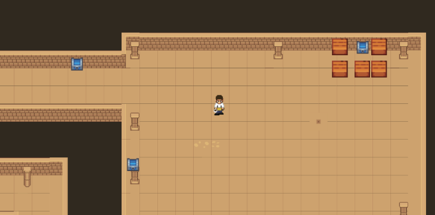
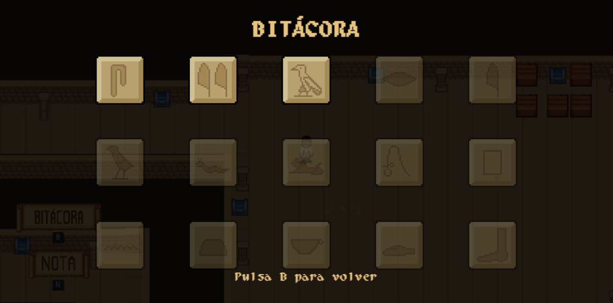

Sobre Nosotros
Juan
Programador
Blanca
Programadora, Community Manager, Artista
Ariadna
Programadora, Diseñadora, Artista
David
Programador, Diseñador
Créditos
Desarrollado por el equipo de Cat-astrophic Games, 2025.
Wally like an Egyptian
Nuestro juego trata sobre una aventura en la que el objetivo principal es encontrar a Wally dentro de una pirámide del antiguo Egipto. Para conseguirlo, el jugador debe seguir una serie de pistas escritas en alfabeto jeroglífico, lo que hará que necesite derribar las fronteras del lenguaje para poder avanzar.
Controles

 Abrir bitácora
Abrir bitácora
 Entrar a minijuego
Entrar a minijuego
Abrir bitácora
Moverse
Entrar a minijuego

Cerrar bitácora
Cerrar bitácora

Juego
Noticias y Avances
📅 Octubre 2025
¡Tenemos Identidad Visual!
Diseñé el Logo del Estudio, así como el nombre de este.
¡Tenemos Redes Sociales!
📅 Noviembre 2025
Listo el player con movimiento base.
Diseño del minijuego de 'Memoria del Templo hecho'.
Mapa de bloques como placeholder terminado.
Diseño del minijuego de 'Memoria del Templo hecho'.
Minijuego estilo Undertale en progreso.
📅 Diciembre 2025
Nuevo minijuego: 'Cerrajero del escriba'
Tenemos placeholders para los menús del juego.
Objetos interactuables del juego en camino.
Assets para minijuegos niquelados. Fondos e iconos de ui a punto.
'Cazador de Reptiles' llega a la lista de minijuegos.
Metidos algunos sonidos para acciones basicas del juego y melodía de fondo para minijuegos.
Minijuego final 'Buscando a Luigi' esta ready.
Redes Sociales
Síguenos en: